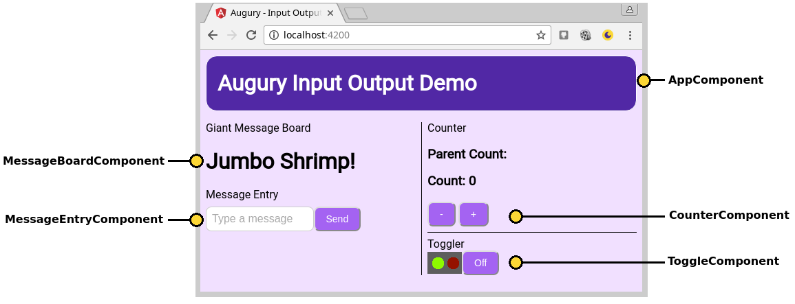
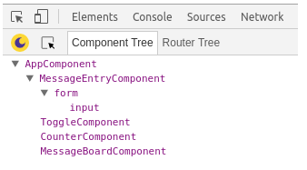
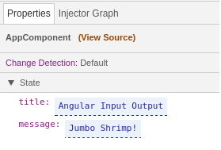
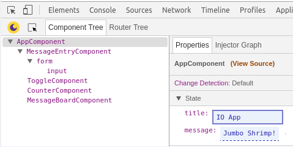
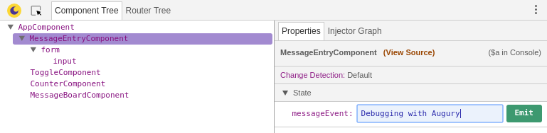
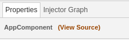
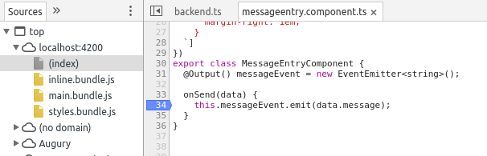
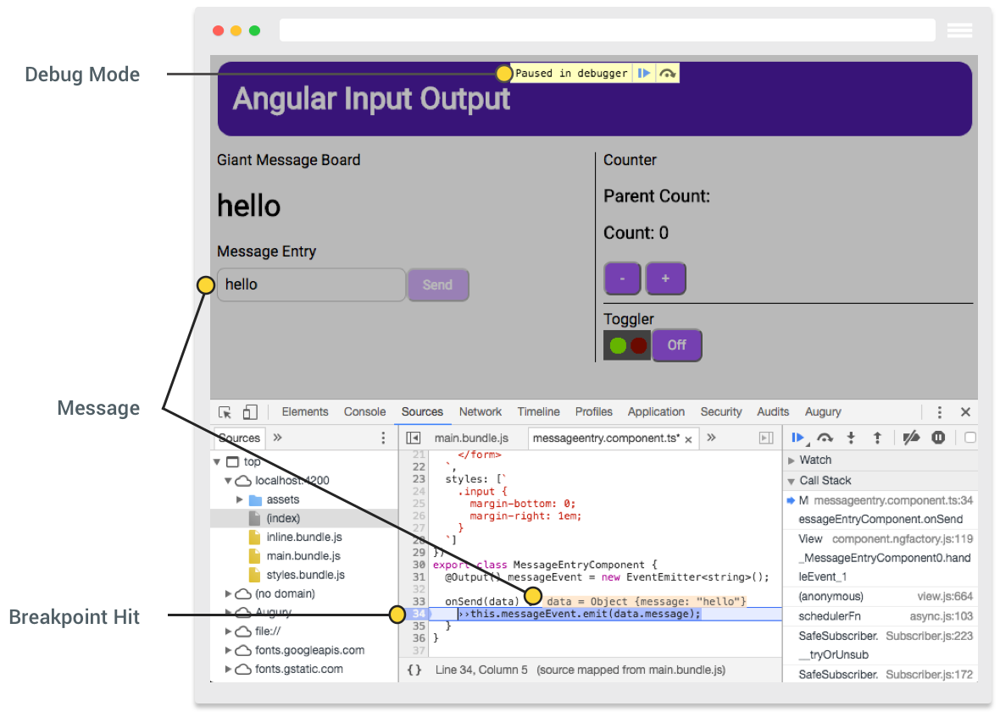

原文链接：https://augury.angular.io/pages/guides/io-demo.html

Launch Demo Application 访问在线demo
Description 简介
这个 Input Output Angular 应用展示了在组件内部和跨组件的数据传递。这个应用使用了Angular的input和output装饰器，也使用了事件和数据绑定。
The Input Output Angular application demonstrates passing data inside a component as well as across components. The application makes uses of Angular input and output decorators as well as event and data binding.
这个IO应用由以下五部分组成
The IO Application is composed of 5 components that are:
Components 组件
- Root Component
- Jumbo Message Board
- Message Entry
- Counter
- Toggle Button
Architecture 结构
这个IO应用的根组件是 AppComponent ，它包含了四个有各自特殊行为的组件。
The IO application root component is AppComponent, it houses the other 4 components that each have a specific behaviour.
| Component 组件 | Description 描述 |
|---|---|
AppComponent |
Root Component 根组件 |
MessageBoardComponent |
Large message board. 信息板块 |
MessageEntryComponent |
Message entry form that emits a message. 输入一条信息的入口 |
CounterComponent |
A counter that emits a count value. 计数器组件 |
ToggleComponent |
Toggle button with state lights. 控制状态信号灯的开关 |
Opening Augury 打开Augury
使用Augury，我们要打开开发者工具
To use Augury, we need to open DevTools.
|
|
打开开发者工具之后，选择最右侧的 Augury 选项卡。
When DevTools opens, select the Augury tab located on the far right.
Component view 组件视图
Augury打开之后，这个组件视图将展示组件树。它展示了应用中所有的可用组件及其父子关系。下面我们看看我们在组织结构章节中讨论过的组件列表。
Once Augury is opened, the component view is presented in the Component Tree. It shows all the available components in the application, along with their parent-child relationship. Below we see the list of components discussed in the architecture section earlier.
这个应用的根节点在列表的顶部。列在根节点下向右缩进的都是子节点。
The application root component AppComponent is listed at the top. Shifted slightly to the right and appearing under the root component are all the children components.

如果我们看一眼 app.component.html 文件，我们就会发现在代码中，子组件是出现在组件的 template 。
In code, a child component is a component that appears inside a component’s template. If we peek at the file app.component.html, we will see.
Edited for readability 写可读性好的代码
|
|
如果我们在组件树中选择 AppComponent ，右侧将出现 Properties 标签页，我们可在 State 下看见组件的属性。
If we select AppComponent inside the Component Tree, to the left inside the Properties tab we see the component’s properties under the State group.

如果您浏览下IO应用的示例代码，你会发现有一个属性丢失了，它属于 count 。
If you have looked through the example code for IO application, you will notice there is one property missing, that being the property count.
app.component.ts
Augury会忽略没有值的变量，因为ts会将它简单的编译出来。所以，建议您给每一个变量赋初始值。如果存在变量是 undefined ，那么这是一个不好的编程实践并且是个反面教材。
Augury will not show properties in a component if it not assigned a value, since TypeScript will simply compile it out. It is therefore suggested you assign a default value to each property. Having a property with an undefined value is poor coding practice and is an anti-pattern.
Bad
Good
在我们的IO应用中，我们故意的声明了一个没有初始值的变量来演示您应该在Augury中注意的问题。如果您没有意识到变量未出现的原因，您会感到困惑的。
In our example IO application, we have intentionally declared a property count with no assigned value to demonstrate the behaviour you would see in Augury. If you are not aware of why a property failed to appear, you might be confused.
当然了，如果我们点击计数按钮，将会初始化这个计数变量。
However if we click on one of the counter buttons, this will initialize the count property with a value.
Editing properties 编辑属性
在 Properties 标签页，在 State 下，可编辑的属性会用虚线表示。让我们来改变 AppComponent 的 title 属性。
In the Properties tab, under State, an editable property will be displayed with a dashed underline. Let us change the title property of AppComponent.
- 在组件树标签选择
AppComponent。 - 在右侧的 Properties 标签页选择
title。 输入“IO App” ，然后回车。
Select
AppComponentfrom Component Tree tab.- Click on the text to the right of
titlefrom the Properties tab. - Type “IO App” followed by the Enter key.

Firing events 发射事件
IO应用中存在两个组件有弹射事件。CounterComponent 和 MessageEntryComponent 都有一个使用 @Output() 装饰器的事件属性，并且有事件弹出 （EventEmitter）。
The IO application has two components that emit an event. The CounterComponent and MessageEntryComponent have a event property decorated with @Output(), which has an EventEmitter attached to it.
我们选中看看 MessageEntryComponent 。在属性标签页，你会注意到 messageEntry 画了虚线。点击它，输入信息，比如“Debugging with Augury” 并且点击发射按钮。
We will look at MessageEntryComponent, start by selecting the component. In the Properties tab, you will notice messageEntry under State. Click and type a message, like “Debugging with Augury” and click on the Emit button.

我们注意到IO应用，在信息展示位置，新的消息已经出现了。通过点击 Emit 按钮，一个事件被发射。在例子中这个事件叫 messageEvent 。
You will notice in the IO app, under Message Board the new message is displayed. By clicking on the Emit button, an event was fired, in particular an event called messageEvent.
Viewing source code 阅读源码
Augury提供了一个快速方便的方式调到选中组件的源码。点击 View Source 链接，就会定位到 Properties 标签页。
Augury provides a quick and convenient way to jump to the source code of a selected component. To do this, click on the View Source link, it is located in the Properties tab.

按照前边的步骤，试试 选中 MessageEntryComponent ，点击 View Source ，就会在开发者工具的 Sources 标签页看见源码。
Following along from the previous step, with MessageEntryComponent selected, click on View Source. This will bring up the source code in DevTools by switching to the Sources tab.
刚刚在“发射事件”部分，我们发射了一个 messageEvent 事件。查看源码，我们可以看见 @Output() 选择器定义的属性。
Earlier under section Firing Events we emitted the messageEvent event. Looking at the source code, we can see this property is defined with the @Output() decorator.

如果我们想确认下事件确实触发了，我们可以在事件处理函数onSend() 处设置断点并且发射新的事件。
If we want to convince ourselves that an event is triggered, we can set a breakpoint inside the event handler onSend() and emit a new event.

我们使用Augury分析这个IO应用的部分就到此为止。现在您应该很轻松的调试一个Angular应用的输入、输出、属性绑定和事件。
This concludes our journey of looking at the IO application with Augury. You should now feel more comfortable debugging input, output, property bindings and events in an Angular app.